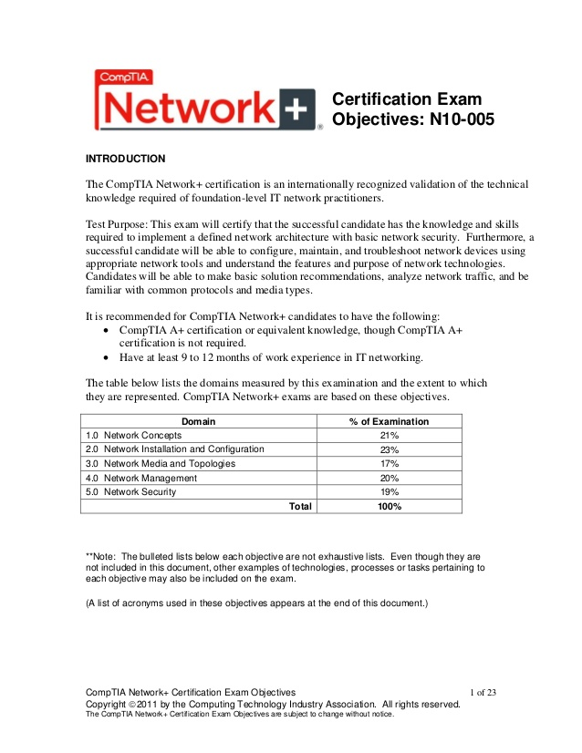
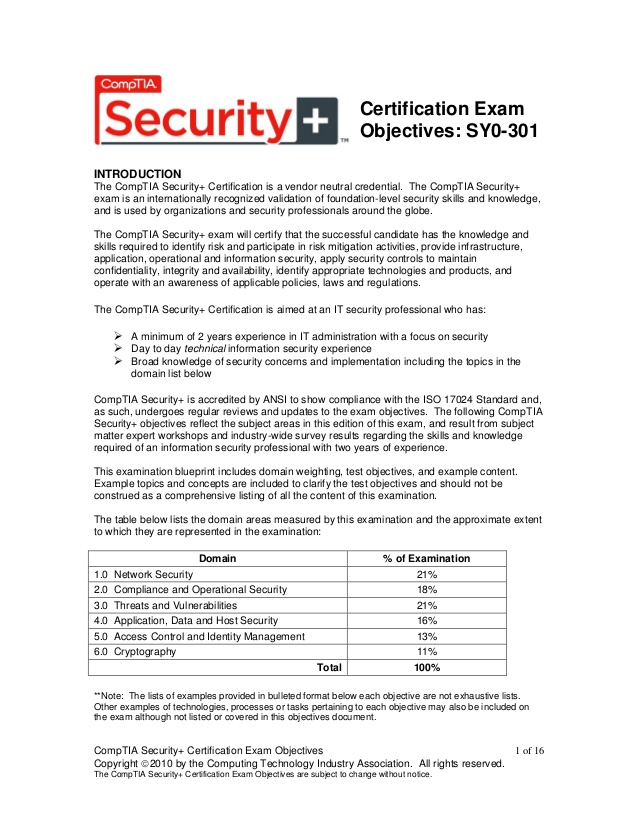
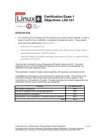

Visit my GitHub!
The Cisco Certified Network Associate is the holy grail of entry-level certifications that somebody wanting to get into IT as a Network Administrator should want to achieve. It is only preceded by Network + and Security + in scope. Some employers consider a CCNA holder to be well qualified even without an accompanying Computer Science degree. The CCNA has long been the gold standard when it comes to entry-level certifications. Because of this, I find it very valuable to have and why I am pursuing a CCNA before my other certifications.
Let's first give a brief overview of the exam objectives and percentage of coverage in the new exam which was released earlier this year. The CCNA covers your knowledge and skill on:
To see the official exam topics as published by Cisco visit the following:
CCNA 200-301 Exam Topics

Network+ is a network certification run by CompTIA. It is a vendor-neutral certification that focuses on the basics of troubleshooting, configuring, and managing networks. It covers configuration, management, and troubleshooting of common wired and wireless network devices. It also covers security concepts, though that is more of a broad subject as the Security + exam more closely examines network security. CompTIA Network + is geared toward entry-level network and system engineers. Topics of the Network+ exam include:
To see the official exam topics as published by CompTIA review this PDF document: Network+ N10-007 Exam Topics 
According to the CompTIA website: "Security+ is the first security certification IT professionals should earn." They say that because by achieving the certification, you show that you have a base knowledge of skills and knowledge to perform a cybersecurity role. Known as Sec+ for short, the exam will prepare you to have a more wide base of knowledge than somebody coming into the IT sector with no knowledge. The whole point of an IT certification is to demonstrate that you have what it takes to perform a certain role. This is why employers pay such a high value to certifications. By seeing somebody with certifications they know that not only are they capable of learning the subject matter, but they will not have to bear the costs of training an employee from the ground up. In my opinion, gaining baseline certifications like these should not cost anyone more than the exam itself. There is plenty of material available to teach somebody what it takes to be a Sec+ for free. Somebody just needs to aggregate the information into one location like I plan to do on this website.
Sec+ focuses on the following skills as viewed on the CompTIA website:
To see the official exam topics as published by CompTIA review this PDF document: Security+ SYO-501 Exam Topics 
Now on to my final certification I will be focusing on. This one is not specifically a networking certification, but I feel like it is something every Network Engineer should pursue in light of the future of networking. More and more, network administration is relying on automation to streamline management and leave the mundane repetitive tasks to the computer. The Linux+ exam is yet again another CompTIA certification. It is meant to validate the skills of system administrators supporting Linux system. Since Linux distributions are the most widely used Operating Systems around the world and is emerging in many new technologies (like IoT, servers, etc.) it is crucial that future IT professionals start to develop a firm grasp on Linux OS. CompTIA Linux+ covers common tasks in major distributions of Linux (there are a plethora) specifically focusing on:
To see the official exam topics as published by CompTIA review this PDF document: Linux+ XKO-004 Exam Topics 